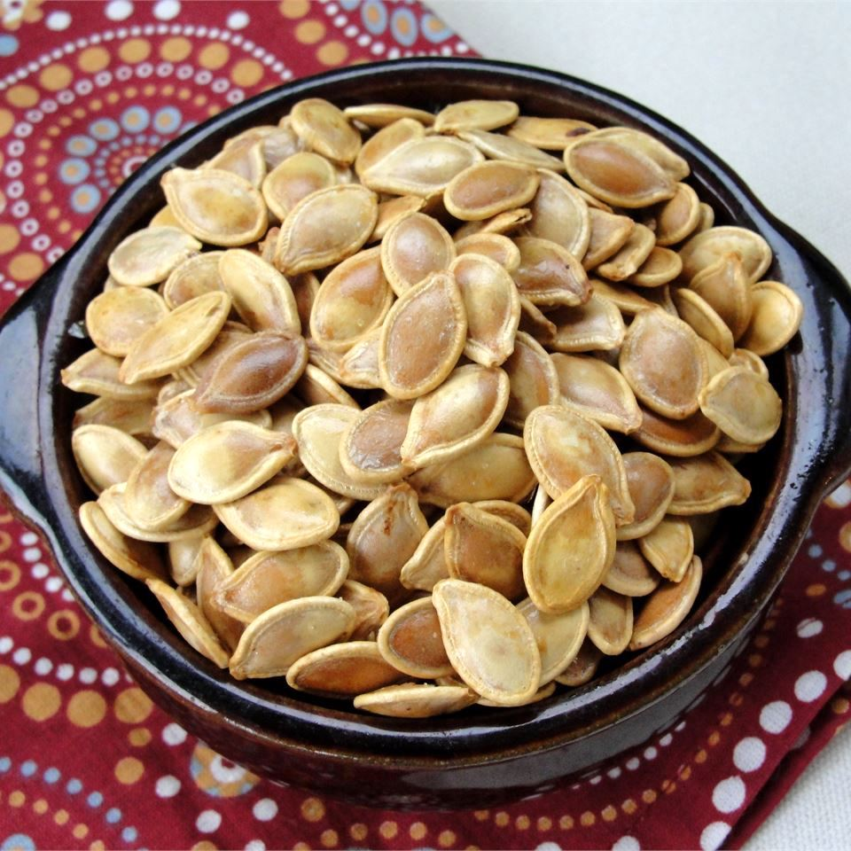

Roasted Pumpkin Seeds

Description
Here is an easy recipe for roasting fresh pumpkin seeds.
Ingredients
- 1 ½ cups raw whole pumpkin seeds
- 2 teaspoons butter melted
- 1 pinch salt
Directions
- Preheat oven to 300 degrees F (150 degrees C)
-
Toss seeds in a bowl with the melted butter and salt. Spread the seeds
in a single layer on a baking sheet and bake for about 45 minutes or
until golden brown; stir occasionally.